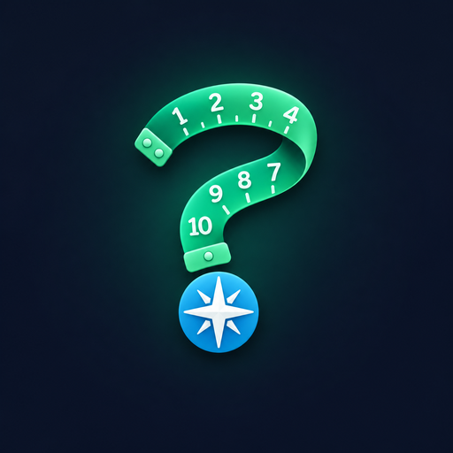
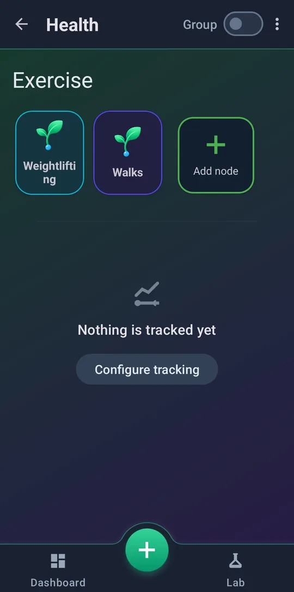
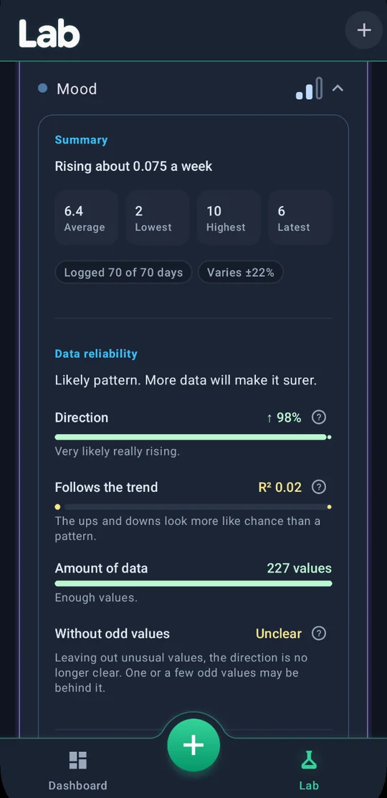
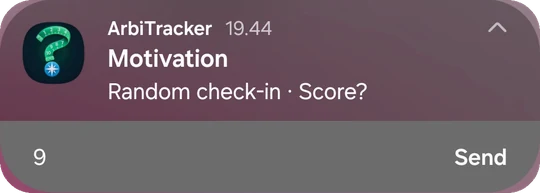
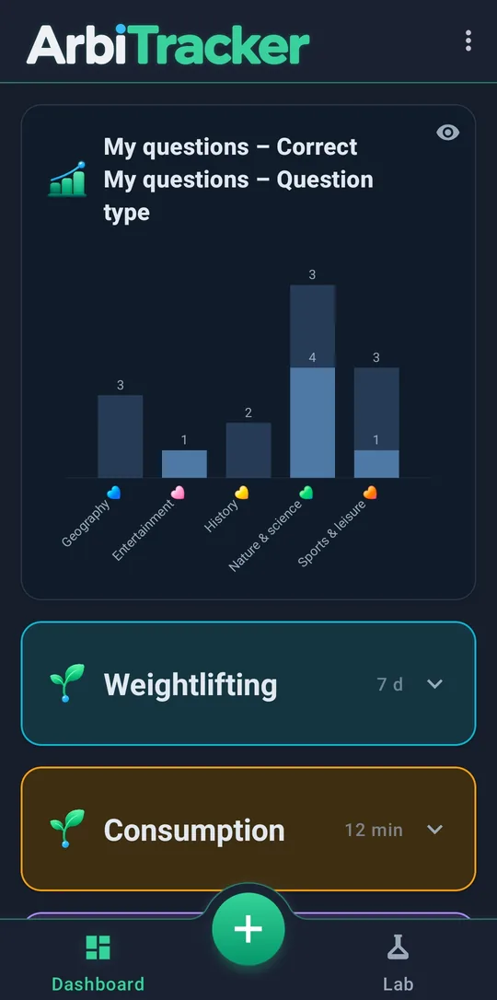

Track anything.
See what it means.
Like 'sleep'
Two tools in one
Use one, or both.
Collect
Your phone as a data collector
- Any structure you want
- Log in seconds, even from a notification
- No agenda. Just a good tool

More
- Nodes: everything you track is a node, and nodes can hold nodes. 'garden' holds 'tomatoes' and 'basil', each with its own measurements.
- Any kind of value: numbers, yes/no, categories, text and times, with optional rules like "whole numbers from 1 to 10".
- Calculated values: combine measurements into new ones, like a weekly total.
- Only want the data? Save it as CSV and use it anywhere.
Understand

An honest lab for your data
- Compare anything with anything
- Says how sure it is, or that it needs more data
- More data, more hidden patterns

More
- Trends are checked against chance and odd values before the app calls something rising or falling.
- Relations are checked without the shared trend over time, so two things that both just grow don't look related.
- Timing: does a day of 'board games' go with a better 'mood' the next day?
- Unbiased: it never judges what's good or bad. It only calculates, and says "goes with", never "causes".
Set up anything in a minute
List what you write down each time. The app makes the form. Try it.
1 Set up
Setup measurement(s)
2 Record
Morning run
New observation
Now ▾
Recent
For both kinds of curious
Track exactly what you want, then test your hunch: do your 'houseplants' grow faster in the weeks you 'talk to them'?
Just collect. The more you log, the more the app can compare, and the patterns come to you.
Cherries on top
🎲
Random check-ins
Get asked at random moments, for an honest picture, not just the moments you remember.

📌
Your dashboard
Pin whatever has your interest right now: things you track and charts.

🎯
Goals
Aim for '8 hours of sleep', or simply better than usual.

🧩
Templates
Start in a minute with ready setups like 'staying in touch'.
Your data. Only on your phone.
Works offline
Nothing leaves your phone
Never sold
No account
Export everything
No ads, no tracking. Privacy policy
What will you track?
'sleep'
'mood at random moments'
'bird sightings'
'sourdough rise'
'visits to grandma'
'guitar practice'
'headaches'
'chess games'